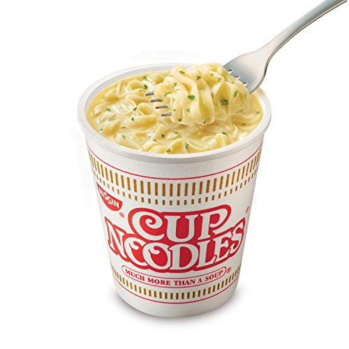

Instant Noodles

Description
Cup Noodles are your classic "I'm feeling lazy" meal! With few ingredients and
short cooking time, Cup Noodles are the quintessential degen meal!
Ingredients
- Cup Noodles
- Water
- Chopsticks or similar utensil
- Functional microwave
- No life
Steps
- Retrieve materials
- Peel back half of the Cup Noodles lid
- Pour water in until it reaches the inner line
- Place cup in microwave and microwave for the amount of time recommended
- CONSUME
>